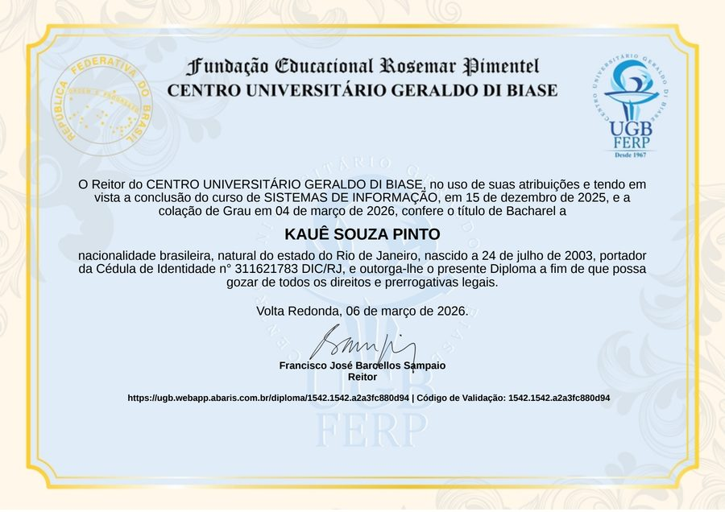

Suporte de TI, Infraestrutura e automação com Python, SQL e IA — pronto para novos desafios remotos.
Sistemas que não caem, dados que fazem sentido
Olá, eu sou
Atuo onde usuários e sistemas se encontram: suporte técnico, infraestrutura e a garantia de que tudo continue de pé. Esse olhar analítico tem migrado cada vez mais para dados — usando Python e SQL para automatizar processos manuais, com IA entrando cada vez mais nesse fluxo de trabalho.
Plataforma web + 1 projeto acadêmico (TCC)
Suporte ágil e direto
Sistemas que não caem
Suporte de TI & Infraestrutura
Python, SQL & Automação
Remoto e freelance
Explore projetos, certificados e tecnologias que uso no dia a dia.
Aplicação web em Python (Flask) para publicação de dicas e prognósticos esportivos, com área de conteúdo protegido para assinantes.
Trabalho de Conclusão de Curso: solução com Inteligência Artificial para análise de transações financeiras e detecção de padrões anômalos.

Centro Universitário Geraldo Di Biase (UGB) — Volta Redonda/RJ. Conclusão em dezembro de 2025.